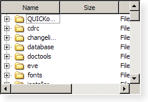

QTreeWidget¶
Synopsis¶
Functions¶
- def
addTopLevelItem(item) - def
addTopLevelItems(items) - def
closePersistentEditor(item[, column=0]) - def
columnCount() - def
currentColumn() - def
currentItem() - def
editItem(item[, column=0]) - def
findItems(text, flags[, column=0]) - def
headerItem() - def
indexFromItem(item[, column=0]) - def
indexFromItem(item[, column=0]) - def
indexOfTopLevelItem(item) - def
insertTopLevelItem(index, item) - def
insertTopLevelItems(index, items) - def
invisibleRootItem() - def
isFirstItemColumnSpanned(item) - def
isItemExpanded(item) - def
isItemHidden(item) - def
isItemSelected(item) - def
isPersistentEditorOpen(item[, column=0]) - def
itemAbove(item) - def
itemAt(p) - def
itemAt(x, y) - def
itemBelow(item) - def
itemFromIndex(index) - def
itemWidget(item, column) - def
items(data) - def
openPersistentEditor(item[, column=0]) - def
removeItemWidget(item, column) - def
selectedItems() - def
setColumnCount(columns) - def
setCurrentItem(item) - def
setCurrentItem(item, column) - def
setCurrentItem(item, column, command) - def
setFirstItemColumnSpanned(item, span) - def
setHeaderItem(item) - def
setHeaderLabel(label) - def
setHeaderLabels(labels) - def
setItemExpanded(item, expand) - def
setItemHidden(item, hide) - def
setItemSelected(item, select) - def
setItemWidget(item, column, widget) - def
sortColumn() - def
sortItems(column, order) - def
takeTopLevelItem(index) - def
topLevelItem(index) - def
topLevelItemCount() - def
visualItemRect(item)
Virtual functions¶
- def
dropMimeData(parent, index, data, action) - def
mimeData(items) - def
mimeTypes() - def
supportedDropActions()
Slots¶
- def
clear() - def
collapseItem(item) - def
expandItem(item) - def
scrollToItem(item[, hint=EnsureVisible])
Signals¶
- def
currentItemChanged(current, previous) - def
itemActivated(item, column) - def
itemChanged(item, column) - def
itemClicked(item, column) - def
itemCollapsed(item) - def
itemDoubleClicked(item, column) - def
itemEntered(item, column) - def
itemExpanded(item) - def
itemPressed(item, column) - def
itemSelectionChanged()
Detailed Description¶
The
PySide2.QtWidgets.QTreeWidgetclass provides a tree view that uses a predefined tree model.The
PySide2.QtWidgets.QTreeWidgetclass is a convenience class that provides a standard tree widget with a classic item-based interface similar to that used by thePySide2.QtWidgets.QListViewclass in Qt 3. This class is based on Qt’s Model/View architecture and uses a default model to hold items, each of which is aPySide2.QtWidgets.QTreeWidgetItem.Developers who do not need the flexibility of the Model/View framework can use this class to create simple hierarchical lists very easily. A more flexible approach involves combining a
PySide2.QtWidgets.QTreeViewwith a standard item model. This allows the storage of data to be separated from its representation.In its simplest form, a tree widget can be constructed in the following way:
treeWidget = QTreeWidget() treeWidget.setColumnCount(1) items = [] for i in range(10): items.append(QTreeWidgetItem(None, QStringList(QString("item: %1").arg(i)))) treeWidget.insertTopLevelItems(None, items)Before items can be added to the tree widget, the number of columns must be set with
PySide2.QtWidgets.QTreeWidget.setColumnCount(). This allows each item to have one or more labels or other decorations. The number of columns in use can be found with thePySide2.QtWidgets.QTreeWidget.columnCount()function.The tree can have a header that contains a section for each column in the widget. It is easiest to set up the labels for each section by supplying a list of strings with
PySide2.QtWidgets.QTreeWidget.setHeaderLabels(), but a custom header can be constructed with aPySide2.QtWidgets.QTreeWidgetItemand inserted into the tree with thePySide2.QtWidgets.QTreeWidget.setHeaderItem()function.The items in the tree can be sorted by column according to a predefined sort order. If sorting is enabled, the user can sort the items by clicking on a column header. Sorting can be enabled or disabled by calling
PySide2.QtWidgets.QTreeView.setSortingEnabled(). ThePySide2.QtWidgets.QTreeView.isSortingEnabled()function indicates whether sorting is enabled.See also
PySide2.QtWidgets.QTreeWidgetItemPySide2.QtWidgets.QTreeWidgetItemIteratorPySide2.QtWidgets.QTreeViewModel/View Programming Settings Editor Example
-
class
PySide2.QtWidgets.QTreeWidget([parent=nullptr])¶ Parameters: parent – PySide2.QtWidgets.QWidgetConstructs a tree widget with the given
parent.
-
PySide2.QtWidgets.QTreeWidget.addTopLevelItem(item)¶ Parameters: item – PySide2.QtWidgets.QTreeWidgetItemAppends the
itemas a top-level item in the widget.
-
PySide2.QtWidgets.QTreeWidget.addTopLevelItems(items)¶ Parameters: items – Appends the list of
itemsas a top-level items in the widget.
-
PySide2.QtWidgets.QTreeWidget.clear()¶ Clears the tree widget by removing all of its items and selections.
Note
Since each item is removed from the tree widget before being deleted, the return value of
QTreeWidgetItem.treeWidget()will be invalid when called from an item’s destructor.
-
PySide2.QtWidgets.QTreeWidget.closePersistentEditor(item[, column=0])¶ Parameters: - item –
PySide2.QtWidgets.QTreeWidgetItem - column –
PySide2.QtCore.int
Closes the persistent editor for the
itemin the givencolumn.This function has no effect if no persistent editor is open for this combination of item and column.
- item –
-
PySide2.QtWidgets.QTreeWidget.collapseItem(item)¶ Parameters: item – PySide2.QtWidgets.QTreeWidgetItemCloses the
item. This causes the tree containing the item’s children to be collapsed.
-
PySide2.QtWidgets.QTreeWidget.columnCount()¶ Return type: PySide2.QtCore.int
-
PySide2.QtWidgets.QTreeWidget.currentColumn()¶ Return type: PySide2.QtCore.intReturns the current column in the tree widget.
-
PySide2.QtWidgets.QTreeWidget.currentItem()¶ Return type: PySide2.QtWidgets.QTreeWidgetItemReturns the current item in the tree widget.
-
PySide2.QtWidgets.QTreeWidget.currentItemChanged(current, previous)¶ Parameters: - current –
PySide2.QtWidgets.QTreeWidgetItem - previous –
PySide2.QtWidgets.QTreeWidgetItem
- current –
-
PySide2.QtWidgets.QTreeWidget.dropMimeData(parent, index, data, action)¶ Parameters: - parent –
PySide2.QtWidgets.QTreeWidgetItem - index –
PySide2.QtCore.int - data –
PySide2.QtCore.QMimeData - action –
PySide2.QtCore.Qt.DropAction
Return type: PySide2.QtCore.boolHandles the
datasupplied by a drag and drop operation that ended with the givenactionin theindexin the givenparentitem.The default implementation returns
trueif the drop was successfully handled by decoding the mime data and inserting it into the model; otherwise it returnsfalse.- parent –
-
PySide2.QtWidgets.QTreeWidget.editItem(item[, column=0])¶ Parameters: - item –
PySide2.QtWidgets.QTreeWidgetItem - column –
PySide2.QtCore.int
Starts editing the
itemin the givencolumnif it is editable.- item –
-
PySide2.QtWidgets.QTreeWidget.expandItem(item)¶ Parameters: item – PySide2.QtWidgets.QTreeWidgetItemExpands the
item. This causes the tree containing the item’s children to be expanded.
-
PySide2.QtWidgets.QTreeWidget.findItems(text, flags[, column=0])¶ Parameters: - text – unicode
- flags –
PySide2.QtCore.Qt.MatchFlags - column –
PySide2.QtCore.int
Return type: Returns a list of items that match the given
text, using the givenflags, in the givencolumn.
-
PySide2.QtWidgets.QTreeWidget.headerItem()¶ Return type: PySide2.QtWidgets.QTreeWidgetItemReturns the item used for the tree widget’s header.
-
PySide2.QtWidgets.QTreeWidget.indexFromItem(item[, column=0])¶ Parameters: - item –
PySide2.QtWidgets.QTreeWidgetItem - column –
PySide2.QtCore.int
Return type: Returns the
PySide2.QtCore.QModelIndexassociated with the givenitemin the givencolumn.Note
In Qt versions prior to 5.7, this function took a non-
constitem.- item –
-
PySide2.QtWidgets.QTreeWidget.indexFromItem(item[, column=0]) Parameters: - item –
PySide2.QtWidgets.QTreeWidgetItem - column –
PySide2.QtCore.int
Return type: This is an overloaded function.
- item –
-
PySide2.QtWidgets.QTreeWidget.indexOfTopLevelItem(item)¶ Parameters: item – PySide2.QtWidgets.QTreeWidgetItemReturn type: PySide2.QtCore.intReturns the index of the given top-level
item, or -1 if the item cannot be found.
-
PySide2.QtWidgets.QTreeWidget.insertTopLevelItem(index, item)¶ Parameters: - index –
PySide2.QtCore.int - item –
PySide2.QtWidgets.QTreeWidgetItem
Inserts the
itematindexin the top level in the view.If the item has already been inserted somewhere else it won’t be inserted.
- index –
-
PySide2.QtWidgets.QTreeWidget.insertTopLevelItems(index, items)¶ Parameters: - index –
PySide2.QtCore.int - items –
Inserts the list of
itemsatindexin the top level in the view.Items that have already been inserted somewhere else won’t be inserted.
- index –
-
PySide2.QtWidgets.QTreeWidget.invisibleRootItem()¶ Return type: PySide2.QtWidgets.QTreeWidgetItemReturns the tree widget’s invisible root item.
The invisible root item provides access to the tree widget’s top-level items through the
PySide2.QtWidgets.QTreeWidgetItemAPI, making it possible to write functions that can treat top-level items and their children in a uniform way; for example, recursive functions.
-
PySide2.QtWidgets.QTreeWidget.isFirstItemColumnSpanned(item)¶ Parameters: item – PySide2.QtWidgets.QTreeWidgetItemReturn type: PySide2.QtCore.boolReturns
trueif the givenitemis set to show only one section over all columns; otherwise returnsfalse.
-
PySide2.QtWidgets.QTreeWidget.isItemExpanded(item)¶ Parameters: item – PySide2.QtWidgets.QTreeWidgetItemReturn type: PySide2.QtCore.boolReturns
trueif the givenitemis open; otherwise returnsfalse.This function is deprecated. Use
QTreeWidgetItem.isExpanded()instead.
-
PySide2.QtWidgets.QTreeWidget.isItemHidden(item)¶ Parameters: item – PySide2.QtWidgets.QTreeWidgetItemReturn type: PySide2.QtCore.boolReturns
trueif theitemis explicitly hidden, otherwise returnsfalse.This function is deprecated. Use
QTreeWidgetItem.isHidden()instead.
-
PySide2.QtWidgets.QTreeWidget.isItemSelected(item)¶ Parameters: item – PySide2.QtWidgets.QTreeWidgetItemReturn type: PySide2.QtCore.boolReturns
trueif theitemis selected; otherwise returnsfalse.This function is deprecated. Use
QTreeWidgetItem.isSelected()instead.
-
PySide2.QtWidgets.QTreeWidget.isPersistentEditorOpen(item[, column=0])¶ Parameters: - item –
PySide2.QtWidgets.QTreeWidgetItem - column –
PySide2.QtCore.int
Return type: PySide2.QtCore.boolReturns whether a persistent editor is open for item
itemin columncolumn.- item –
-
PySide2.QtWidgets.QTreeWidget.itemAbove(item)¶ Parameters: item – PySide2.QtWidgets.QTreeWidgetItemReturn type: PySide2.QtWidgets.QTreeWidgetItemReturns the item above the given
item.
-
PySide2.QtWidgets.QTreeWidget.itemActivated(item, column)¶ Parameters: - item –
PySide2.QtWidgets.QTreeWidgetItem - column –
PySide2.QtCore.int
- item –
-
PySide2.QtWidgets.QTreeWidget.itemAt(x, y)¶ Parameters: - x –
PySide2.QtCore.int - y –
PySide2.QtCore.int
Return type: This is an overloaded function.
Returns a pointer to the item at the coordinates (
x,y). The coordinates are relative to the tree widget’sPySide2.QtWidgets.QAbstractScrollArea.viewport().- x –
-
PySide2.QtWidgets.QTreeWidget.itemAt(p) Parameters: p – PySide2.QtCore.QPointReturn type: PySide2.QtWidgets.QTreeWidgetItemReturns a pointer to the item at the coordinates
p. The coordinates are relative to the tree widget’sPySide2.QtWidgets.QAbstractScrollArea.viewport().
-
PySide2.QtWidgets.QTreeWidget.itemBelow(item)¶ Parameters: item – PySide2.QtWidgets.QTreeWidgetItemReturn type: PySide2.QtWidgets.QTreeWidgetItemReturns the item visually below the given
item.
-
PySide2.QtWidgets.QTreeWidget.itemChanged(item, column)¶ Parameters: - item –
PySide2.QtWidgets.QTreeWidgetItem - column –
PySide2.QtCore.int
- item –
-
PySide2.QtWidgets.QTreeWidget.itemClicked(item, column)¶ Parameters: - item –
PySide2.QtWidgets.QTreeWidgetItem - column –
PySide2.QtCore.int
- item –
-
PySide2.QtWidgets.QTreeWidget.itemCollapsed(item)¶ Parameters: item – PySide2.QtWidgets.QTreeWidgetItem
-
PySide2.QtWidgets.QTreeWidget.itemDoubleClicked(item, column)¶ Parameters: - item –
PySide2.QtWidgets.QTreeWidgetItem - column –
PySide2.QtCore.int
- item –
-
PySide2.QtWidgets.QTreeWidget.itemEntered(item, column)¶ Parameters: - item –
PySide2.QtWidgets.QTreeWidgetItem - column –
PySide2.QtCore.int
- item –
-
PySide2.QtWidgets.QTreeWidget.itemExpanded(item)¶ Parameters: item – PySide2.QtWidgets.QTreeWidgetItem
-
PySide2.QtWidgets.QTreeWidget.itemFromIndex(index)¶ Parameters: index – PySide2.QtCore.QModelIndexReturn type: PySide2.QtWidgets.QTreeWidgetItemReturns a pointer to the
PySide2.QtWidgets.QTreeWidgetItemassociated with the givenindex.
-
PySide2.QtWidgets.QTreeWidget.itemPressed(item, column)¶ Parameters: - item –
PySide2.QtWidgets.QTreeWidgetItem - column –
PySide2.QtCore.int
- item –
-
PySide2.QtWidgets.QTreeWidget.itemSelectionChanged()¶
-
PySide2.QtWidgets.QTreeWidget.itemWidget(item, column)¶ Parameters: - item –
PySide2.QtWidgets.QTreeWidgetItem - column –
PySide2.QtCore.int
Return type: Returns the widget displayed in the cell specified by
itemand the givencolumn.- item –
-
PySide2.QtWidgets.QTreeWidget.items(data)¶ Parameters: data – PySide2.QtCore.QMimeDataReturn type: Returns an empty list
-
PySide2.QtWidgets.QTreeWidget.mimeData(items)¶ Parameters: items – Return type: PySide2.QtCore.QMimeDataReturns an object that contains a serialized description of the specified
items. The format used to describe the items is obtained from thePySide2.QtWidgets.QTreeWidget.mimeTypes()function.If the list of items is empty, 0 is returned rather than a serialized empty list.
-
PySide2.QtWidgets.QTreeWidget.mimeTypes()¶ Return type: list of strings Returns a list of MIME types that can be used to describe a list of treewidget items.
-
PySide2.QtWidgets.QTreeWidget.openPersistentEditor(item[, column=0])¶ Parameters: - item –
PySide2.QtWidgets.QTreeWidgetItem - column –
PySide2.QtCore.int
Opens a persistent editor for the
itemin the givencolumn.- item –
-
PySide2.QtWidgets.QTreeWidget.removeItemWidget(item, column)¶ Parameters: - item –
PySide2.QtWidgets.QTreeWidgetItem - column –
PySide2.QtCore.int
Removes the widget set in the given
itemin the givencolumn.- item –
-
PySide2.QtWidgets.QTreeWidget.scrollToItem(item[, hint=EnsureVisible])¶ Parameters: Ensures that the
itemis visible, scrolling the view if necessary using the specifiedhint.
-
PySide2.QtWidgets.QTreeWidget.selectedItems()¶ Return type: Returns a list of all selected non-hidden items.
-
PySide2.QtWidgets.QTreeWidget.setColumnCount(columns)¶ Parameters: columns – PySide2.QtCore.int
-
PySide2.QtWidgets.QTreeWidget.setCurrentItem(item, column)¶ Parameters: - item –
PySide2.QtWidgets.QTreeWidgetItem - column –
PySide2.QtCore.int
Sets the current
itemin the tree widget and the current column tocolumn.- item –
-
PySide2.QtWidgets.QTreeWidget.setCurrentItem(item, column, command) Parameters: - item –
PySide2.QtWidgets.QTreeWidgetItem - column –
PySide2.QtCore.int - command –
PySide2.QtCore.QItemSelectionModel.SelectionFlags
Sets the current
itemin the tree widget and the current column tocolumn, using the givencommand.- item –
-
PySide2.QtWidgets.QTreeWidget.setCurrentItem(item) Parameters: item – PySide2.QtWidgets.QTreeWidgetItemSets the current
itemin the tree widget.Unless the selection mode is
NoSelection, the item is also selected.
-
PySide2.QtWidgets.QTreeWidget.setFirstItemColumnSpanned(item, span)¶ Parameters: - item –
PySide2.QtWidgets.QTreeWidgetItem - span –
PySide2.QtCore.bool
Sets the given
itemto only show one section for all columns ifspanis true; otherwise the item will show one section per column.- item –
-
PySide2.QtWidgets.QTreeWidget.setHeaderItem(item)¶ Parameters: item – PySide2.QtWidgets.QTreeWidgetItemSets the header
itemfor the tree widget. The label for each column in the header is supplied by the corresponding label in the item.The tree widget takes ownership of the item.
-
PySide2.QtWidgets.QTreeWidget.setHeaderLabel(label)¶ Parameters: label – unicode Same as
PySide2.QtWidgets.QTreeWidget.setHeaderLabels()(PySide2.QtCore.QStringList(label)).
-
PySide2.QtWidgets.QTreeWidget.setHeaderLabels(labels)¶ Parameters: labels – list of strings Adds a column in the header for each item in the
labelslist, and sets the label for each column.Note that won’t remove existing columns.
-
PySide2.QtWidgets.QTreeWidget.setItemExpanded(item, expand)¶ Parameters: - item –
PySide2.QtWidgets.QTreeWidgetItem - expand –
PySide2.QtCore.bool
Sets the item referred to by
itemto either closed or opened, depending on the value ofexpand.This function is deprecated. Use
QTreeWidgetItem.setExpanded()instead.- item –
-
PySide2.QtWidgets.QTreeWidget.setItemHidden(item, hide)¶ Parameters: - item –
PySide2.QtWidgets.QTreeWidgetItem - hide –
PySide2.QtCore.bool
Hides the given
itemifhideis true; otherwise shows the item.This function is deprecated. Use
QTreeWidgetItem.setHidden()instead.- item –
-
PySide2.QtWidgets.QTreeWidget.setItemSelected(item, select)¶ Parameters: - item –
PySide2.QtWidgets.QTreeWidgetItem - select –
PySide2.QtCore.bool
If
selectis true, the givenitemis selected; otherwise it is deselected.This function is deprecated. Use
QTreeWidgetItem.setSelected()instead.- item –
-
PySide2.QtWidgets.QTreeWidget.setItemWidget(item, column, widget)¶ Parameters: - item –
PySide2.QtWidgets.QTreeWidgetItem - column –
PySide2.QtCore.int - widget –
PySide2.QtWidgets.QWidget
Sets the given
widgetto be displayed in the cell specified by the givenitemandcolumn.The given
widget‘sPySide2.QtWidgets.QWidget.autoFillBackground()property must be set to true, otherwise the widget’s background will be transparent, showing both the model data and the tree widget item.This function should only be used to display static content in the place of a tree widget item. If you want to display custom dynamic content or implement a custom editor widget, use
PySide2.QtWidgets.QTreeViewand subclassPySide2.QtWidgets.QItemDelegateinstead.This function cannot be called before the item hierarchy has been set up, i.e., the
PySide2.QtWidgets.QTreeWidgetItemthat will holdwidgetmust have been added to the view beforewidgetis set.Note
The tree takes ownership of the widget.
- item –
-
PySide2.QtWidgets.QTreeWidget.sortColumn()¶ Return type: PySide2.QtCore.intReturns the column used to sort the contents of the widget.
-
PySide2.QtWidgets.QTreeWidget.sortItems(column, order)¶ Parameters: - column –
PySide2.QtCore.int - order –
PySide2.QtCore.Qt.SortOrder
Sorts the items in the widget in the specified
orderby the values in the givencolumn.- column –
-
PySide2.QtWidgets.QTreeWidget.supportedDropActions()¶ Return type: PySide2.QtCore.Qt.DropActionsReturns the drop actions supported by this view.
See also
Qt.DropActions
-
PySide2.QtWidgets.QTreeWidget.takeTopLevelItem(index)¶ Parameters: index – PySide2.QtCore.intReturn type: PySide2.QtWidgets.QTreeWidgetItemRemoves the top-level item at the given
indexin the tree and returns it, otherwise returns 0;
-
PySide2.QtWidgets.QTreeWidget.topLevelItem(index)¶ Parameters: index – PySide2.QtCore.intReturn type: PySide2.QtWidgets.QTreeWidgetItemReturns the top level item at the given
index, or 0 if the item does not exist.
-
PySide2.QtWidgets.QTreeWidget.topLevelItemCount()¶ Return type: PySide2.QtCore.int
-
PySide2.QtWidgets.QTreeWidget.visualItemRect(item)¶ Parameters: item – PySide2.QtWidgets.QTreeWidgetItemReturn type: PySide2.QtCore.QRectReturns the rectangle on the viewport occupied by the item at
item.
© 2018 The Qt Company Ltd. Documentation contributions included herein are the copyrights of their respective owners. The documentation provided herein is licensed under the terms of the GNU Free Documentation License version 1.3 as published by the Free Software Foundation. Qt and respective logos are trademarks of The Qt Company Ltd. in Finland and/or other countries worldwide. All other trademarks are property of their respective owners.